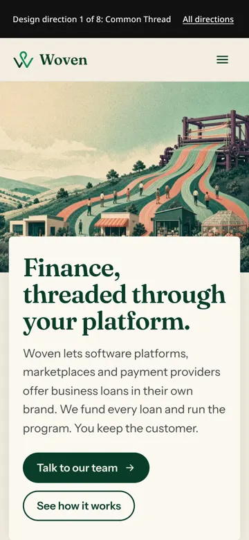
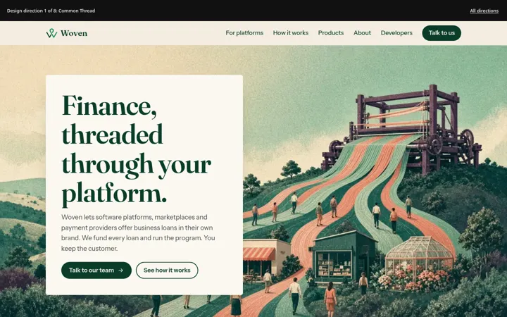

1 Common Thread
Editorial illustrated
Tell the embedded finance story as a picture book: one illustrated world where platforms, businesses and capital are literally threaded together.
Open prototypePalette, fonts, pros and cons
- Suits
- A brand that wants warmth and memorability over spec-sheet credibility; strong for founders, partnerships and investor decks.
- Palette
- Cream
#F3EDE0 - Forest
#0A3D2A - Mint
#B3E6CC - Coral
#E0663A - Plum
#4A2E3F
- Cream
- Fonts (free)
- Fraunces (display), Instrument Sans (text)
- Imagery
- Grainy risograph-style scenes with small mixed figures, colour panels laid over the art.
- Motion
- Slow parallax drift on the hero art, panels rise in once.
- Pros
- Instantly distinctive in a sea of dashboard screenshots
- Explains an abstract product through metaphor
- Same art can run across decks, socials and events
- Cons
- Needs an ongoing illustration budget
- Can feel soft to engineering buyers
- Product UI is shown less